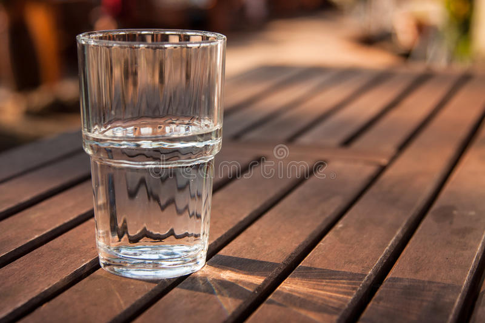

If you can't make water, I am worried for your health.

This is literally the easiest thing to make.
If you honestly need directions, there is no hope for you.
- Grab a glass
- Make sure the opening is at the top.
- Go to your tap
- Turn on the tap and place the glass under.
- Profit?
Click here to go to the top.